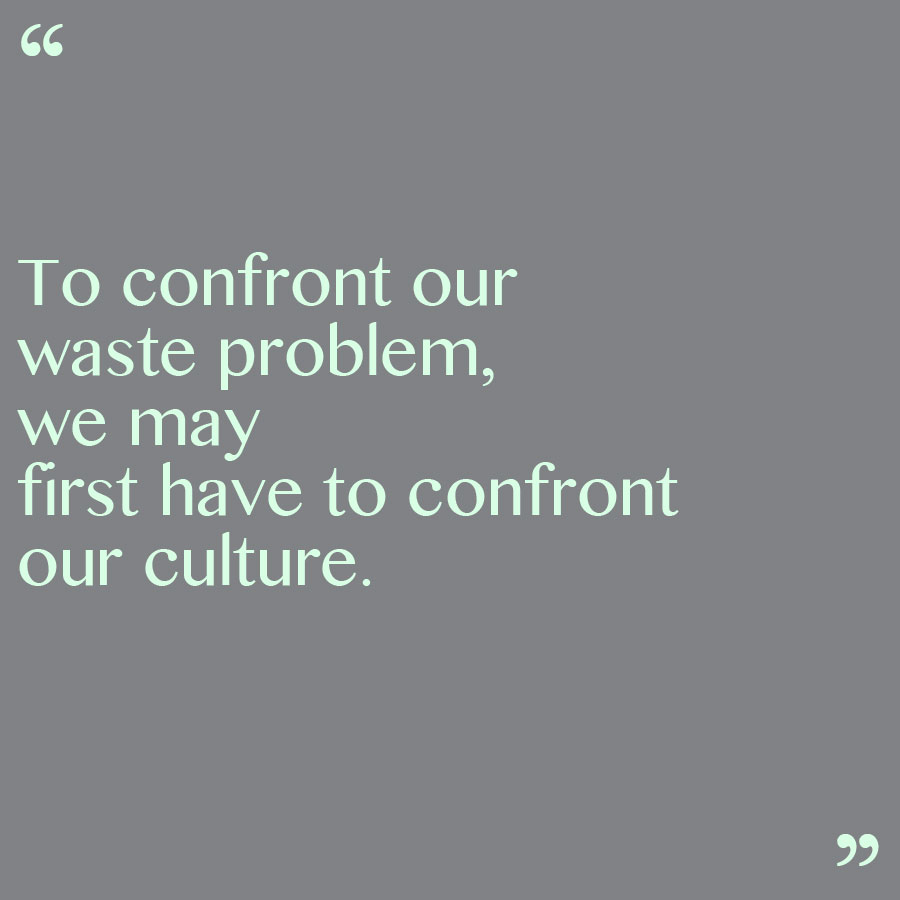
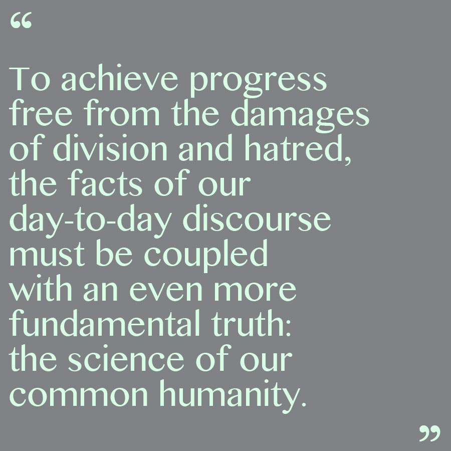
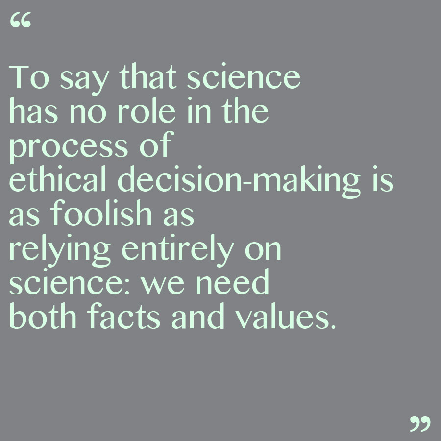
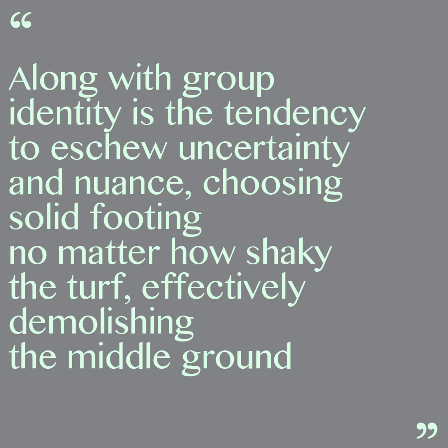
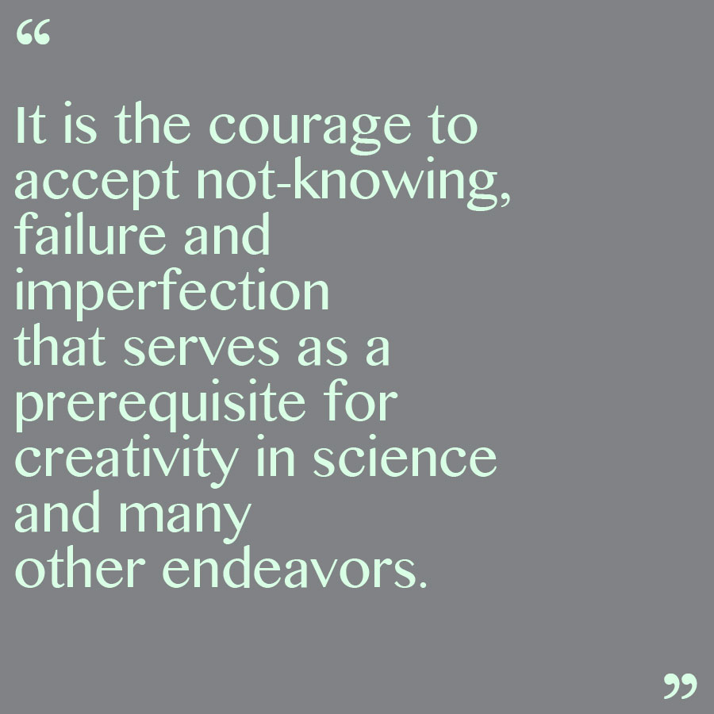
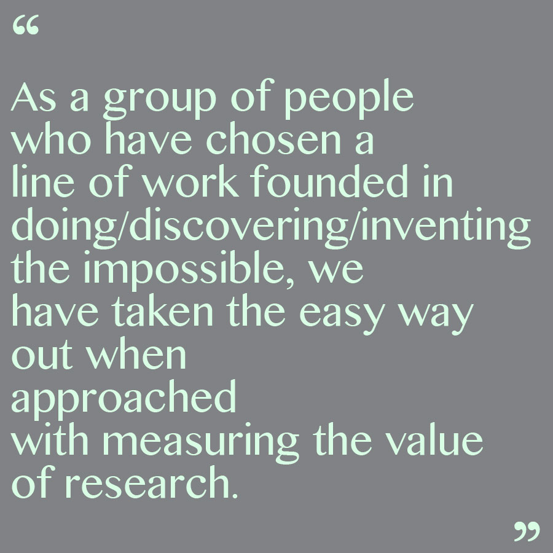

rebecca delker
writing

Waste As A Lens Into Our Culture Of Science *FENS Kavli*

Science Is Far Too Often Communicated as a One-Sided Conversation *On Being*

On Science and Values *Medium*

The Danger of Absolutes in Science Communication *Medium*

Rethinking Academic Culture *Medium*

Measuring the Value of Science *Medium*